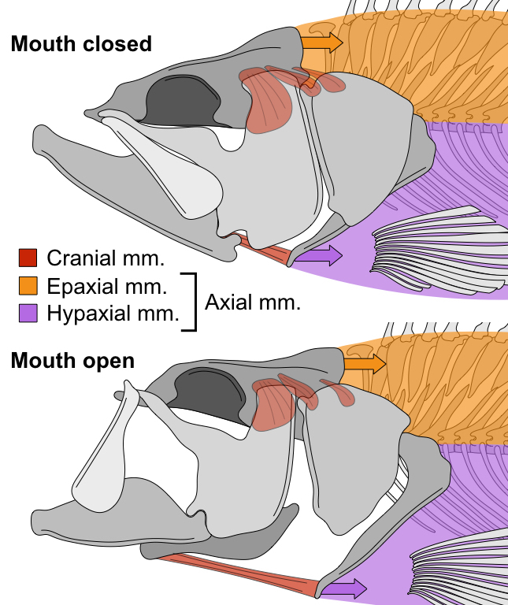

Current Projects

Cranial and axial muscles applying force through the cranial linkage mechanism
Suction feeding is the oldest and most widespread feeding strategy among jawed vertebrates.
Fish suction feed by rapidly expanding the buccal
cavity to create a negative pressure gradient, which drives the flow of water and
nearby prey items into the mouth.
It has recently been shown that 95% of the power required for suction feeding in largemouth
bass is generated by the axial muscles that span most of the body and also function in swimming
(
Camp and Brainerd 2014;
Camp et al. 2015).
These muscles pull on the back of the head and cause the mouth to expand
through a three-dimensional linkage of mobile cranial bones.
Whether locomotor muscles provide most of the power in other suction-feeding
ray-finned fishes remains unknown.
Additionally, if largemouth bass are representative of other suction feeding fishes,
how motor coordination between cranial and postcranial functional systems has
influenced the diversification of body forms among fishes also remains unknown.
Read more...
Mechanical linkages, interconnected chains of rigid links, provide a useful
model for the motion and force transmission of musculoskeletal systems,
particularly for those systems in which the skeletal elements interconnect
to form closed chains (or loops). Mechanical linkages have been
used as models for a diversity of musculoskeletal systems, including the skulls of
fishes (
Westneat 1990)
, some lizards (
Metzger 2002),
and birds (
Van Gennip and Berkhoudt 1992),
the rib cages of birds (
Claessens 2009),
and the striking appendages of mantis shrimps (
Patek et al. 2007).
However, previous applications of linkage modeling have predominately focused
on 2D models and linkages in which all the links
interconnect as a single chain, excluding a number of diverse musculoskeletal
characterized by 3D motions and elements that interconnect
to form multiple, nested chains (referred to in engineering as multiloop or
parallel linkages).
Read more...
A waterfowl beak morphospace
Bird beaks are frequently invoked as a classic example of adaptive evolution to feeding ecology.
However, most studies of feeding evolution in birds have focused
on Passerines, which represent only half of all avian diversity.
And, with the exception of Darwin's finches, there are few bird groups in which
we have an integrated understanding of how the feeding system has evolved.
Waterfowl (Anseriformes) are a diverse and globally distributed order of birds
that includes ducks, geese, swans, and mergansers.
Owing to their economic and agricultural importance,
more is known about the diets of waterfowl than perhaps any other bird order.
Waterfowl also exhibit a diversity of beak shapes and feeding behaviors.
For these reasons waterfowl are an ideal model system for understanding the
evolution of an avian feeding system and for testing classic hypotheses on the link between
beak shape and feeding ecology.
Read more...